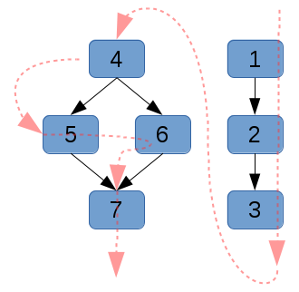
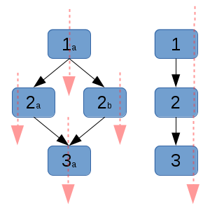
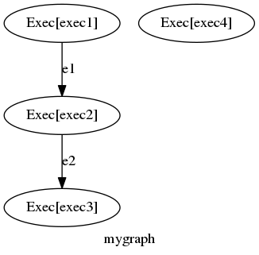
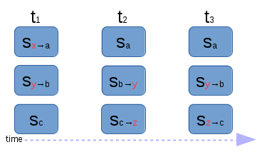
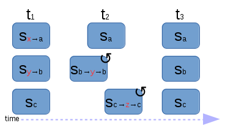
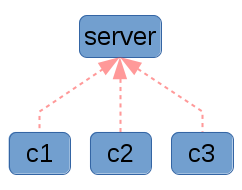
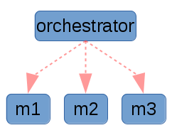
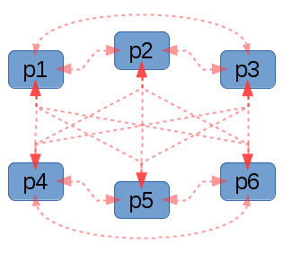
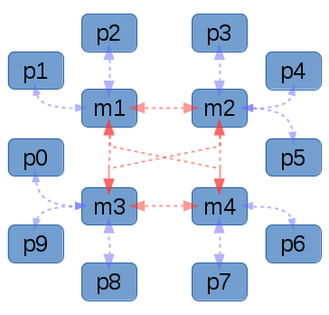

It’s no secret to the readers of this blog that I’ve been active in the configuration management space for some time. I owe most of my knowledge to what I’ve learned while working with Puppet and from other hackers working in and around various other communities.
I’ve published, a number, of articles, in an, attempt, to push, the field, forwards, and to, share the, knowledge, that I’ve, learned, with others. I’ve spent many nights thinking about these problems, but it is not without some chagrin that I realized that the current state-of-the-art in configuration management cannot easily (or elegantly) solve all the problems for which I wish to write solutions.
To that end, I’d like to formally present my idea (and code) for a next generation configuration management prototype. I’m calling my tool mgmt.
Design triad
Mgmt has three unique design elements which differentiate it from other tools. I’ll try to cover these three points, and explain why they’re important. The summary:
1) Parallel execution
Fundamentally, all configuration management systems represent the dependency relationships between their resources in a graph, typically one that is directed and acyclic.
|  |
| Directed acyclic graph g1, showing the dependency relationships with black arrows, and the linearized dependency sort order (a topological sort) with red arrows. |
Unfortunately, the execution of this graph typically has a single worker that runs through a linearized, topologically sorted version of it. There is no reason that a graph with a number of disconnected parts cannot run each separate section in parallel with each other.
|  |
| Graph g2 with the red arrows again showing the execution order of the graph. Please note that this graph is composed of two disconnected parts: one diamond on the left and one triplet on the right, both of which can run in parallel. Additionally, nodes 2a and 2b can run in parallel only after 1a has run, and node 3a requires the entire left diamond to have succeeded before it can execute. |
Typically, some nodes will have a common dependency, which once met will allow its children to all execute simultaneously.
This is the first major design improvement that the mgmt tool implements. It has obvious improvements for performance, in that a long running process in one part of the graph (eg: a package installation) will cause no delay on a separate disconnected part of the graph which is in the process of converging unrelated code. It also has other benefits which we will discuss below.
In practice this is particularly powerful since most servers under configuration management typically combine different modules, many of which have no inter-dependencies.
An example is the best way to show off this feature. Here we have a set of four long (10 second) running processes or exec resources. Three of them form a linear dependency chain, while the fourth has no dependencies or prerequisites. I’ve asked the system to exit after it has been converged for five seconds. As you can see in the example, it is finished five seconds after the limiting resource should be completed, which is the longest running delay to complete in the whole process. That limiting chain took 30 seconds, which we can see in the log as being from three 10 second executions. The logical total of about 35 seconds as expected is shown at the end:
$ time ./mgmt run --file graph8.yaml --converged-timeout=5 --graphviz=example1.dot
22:55:04 This is: mgmt, version: 0.0.1-29-gebc1c60
22:55:04 Main: Start: 1452398104100455639
22:55:04 Main: Running...
22:55:04 Graph: Vertices(4), Edges(2)
22:55:04 Graphviz: Successfully generated graph!
22:55:04 State: graphStarting
22:55:04 State: graphStarted
22:55:04 Exec[exec4]: Apply //exec4 start
22:55:04 Exec[exec1]: Apply //exec1 start
22:55:14 Exec[exec4]: Command output is empty! //exec4 end
22:55:14 Exec[exec1]: Command output is empty! //exec1 end
22:55:14 Exec[exec2]: Apply //exec2 start
22:55:24 Exec[exec2]: Command output is empty! //exec2 end
22:55:24 Exec[exec3]: Apply //exec3 start
22:55:34 Exec[exec3]: Command output is empty! //exec3 end
22:55:39 Converged for 5 seconds, exiting! //converged for 5s
22:55:39 Interrupted by exit signal
22:55:39 Exec[exec4]: Exited
22:55:39 Exec[exec1]: Exited
22:55:39 Exec[exec2]: Exited
22:55:39 Exec[exec3]: Exited
22:55:39 Goodbye!
real 0m35.009s
user 0m0.008s
sys 0m0.008s
$
Note that I’ve edited the example slightly to remove some unnecessary log entries for readability sake, and I have also added some comments and emphasis, but aside from that, this is actual output! The tool also generated graphviz output which may help you better understand the problem:
|  |
| This example is obviously contrived, but is designed to illustrate the capability of the mgmt tool. |
Hopefully you’ll be able to come up with more practical examples.
2) Event driven
All configuration management systems have some notion of idempotence. Put simply, an idempotent operation is one which can be applied multiple times without causing the result to diverge from the desired state. In practice, each individual resource will typically check the state of the element, and if different than what was requested, it will then apply the necessary transformation so that the element is brought to the desired state.
The current generation of configuration management tools, typically checks the state of each element once every 30 minutes. Some do it more or less often, and some do it only when manually requested. In all cases, this can be an expensive operation due to the size of the graph, and the cost of each check operation. This problem is compounded by the fact that the graph doesn’t run in parallel.
|  |
| In this time / state sequence diagram g3, time progresses from left to right. Each of the three elements (from top to bottom) want to converge on states a, b and c respectively. Initially the first two are in states x and y, where as the third is already converged. At t1 the system runs and converges the graph, which entails a state change of the first and second elements. At some time t2, the elements are changed by some external force, and the system is no longer converged. We won't notice till later! At this time t3 when we run for the second time, we notice that the second and third elements are no longer converged and we apply the necessary operations to fix this. An unknown amount of time passed where our cluster was in a diverged or unhealthy state. Traditionally this is on the order of 30 minutes. |
More importantly, if something diverges from the requested state you might wait 30 minutes before it is noticed and repaired by the system!
The mgmt system is unique, because I realized that an event based system could fulfill the same desired behaviour, and in fact it offers a more general and powerful solution. This is the second major design improvement that the mgmt tool implements.
These events that we’re talking about are inotify events for file changes, systemd events (from dbus) for service changes, packagekit events (from dbus again) for package change events, and events from exec calls, timers, network operations and more! In the inotify example, on first run of the mgmt system, an inotify watch is taken on the file we want to manage, the state is checked and it is converged if need be. We don’t ever need to check the state again unless inotify tells us that something happened!
|  |
| In this time / state sequence diagram g4, time progresses from left to right. After the initial run, since all the elements are being continuously monitored, the instant something changes, mgmt reacts and fixes it almost instantly. |
Astute config mgmt hackers might end up realizing three interesting consequences:
--converged-timeout=1, flag. This effectively offers the same behaviour that current generation systems do for the administrators who do not want to experiment with a newer model. Thus, the current systems are a special, simplified model of mgmt!james@computer:/tmp/mgmt$ ls
f1 f2 f3
james@computer:/tmp/mgmt$ cat *
i am f1
i am f2
i am f3
james@computer:/tmp/mgmt$ rm -f f2 && cat f2
i am f2
james@computer:/tmp/mgmt$ echo blah blah > f2 && cat f2
i am f2
james@computer:/tmp/mgmt$ touch f4 && file f4
f4: cannot open `f4' (No such file or directory)
james@computer:/tmp/mgmt$ ls
f1 f2 f3
james@computer:/tmp/mgmt$
That’s fast!
3) Distributed topology
All software typically runs with some sort of topology. Puppet and Chef normally run in a client server topology, where you typically have one server with many clients, each running an agent. They also both offer a standalone mode, but in general this is not more interesting than running a fancy bash script. In this context, I define interesting as “relating to clustered, multiple machine architectures”.
|  |
| Here in graph g5 you can see one server which has three clients initiating requests to it. |
This traditional model of computing is well-known, and fairly easy to reason about. You typically put all of your code in one place (on the server) and the clients or agents need very little personalized configuration to get working. However, it can suffer from performance and scalability issues, and it can also be a single point of failure for your infrastructure. Make no mistake: if you manage your infrastructure properly, then when your configuration management infrastructure is down, you will be unable to bring up new machines or modify existing ones! This can be a disastrous type of failure, and is one which is seldom planned for in disaster recovery scenarios!
Other systems such as Ansible are actually orchestrators, and are not technically configuration management in my opinion. That doesn’t mean they don’t share much of the same problem space, and in fact they are usually idempotent and share many of the same properties of traditional configuration management systems. They are useful and important tools!
|  |
The key difference about an orchestrator, is that it typically operates with a push model, where the server (or the sysadmin laptop) initiates a connection to the machines that it wants to manage. One advantage is that this is sometimes very easy to reason about for multi machine architectures, however it shares the usual downsides around having a single point of failure. Additionally there are some very real performance considerations when running large clusters of machines. In practice these clusters are typically segmented or divided in some logical manner so as to lessen the impact of this, which unfortunately detracts from the aforementioned simplicity of the solution.
Unfortunately with either of these two topologies, we can’t immediately detect when an issue has occurred and respond immediately without sufficiently advanced third party monitoring. By itself, a machine that is being managed by orchestration, cannot detect an issue and communicate back to its operator, or tell the cluster of servers it peers with to react accordingly.
The good news about current and future generation topologies is that algorithms such as the Paxos family and Raft are now gaining wider acceptance and good implementations now exist as Free Software. Mgmt depends on these algorithms to create a mesh of agents. There are no clients and servers, only peers! Each peer can choose to both export and collect data from a distributed data store which lives as part of the cluster of peers. The software that currently implements this data store is a marvellous piece of engineering called etcd.
|  |
| In graph g7, you can see what a fully interconnected graph topology might look like. It should be clear that the numbed of connections (or edges) is quite large. Try and work out the number of edges required for a fully connected graph with 128 nodes. Hint, it's large! |
In practice the number of connections required for each peer to connect to each other peer would be too great, so instead the cluster first achieves distributed consensus, and then the elected leader picks a certain number of machines to run etcd masters. All other agents then connect through one of these masters. The distributed data store can easily handle failures, and agents can reconnect seamlessly to a different temporary master should they need to. If there is a lack or an abundance of transient masters, then the cluster promotes or demotes an agent automatically by asking it to start or stop an etcd process on its host.
|  |
| In graph g8, you can see a tightly interconnected centre of nodes running both their configuration management tasks, but also etcd masters. Each additional peer picks any of them to connect to. As the number of nodes scale, it is far easier to scale such a cluster. Future algorithm designs and optimizations should help this system scale to unprecedented host counts. It should go without saying that it would be wise to ensure that the nodes running etcd masters are in different failure domains. |
By allowing hosts to export and collect data from the distributed store, we actually end up with a mechanism that is quite similar to what Puppet calls exported resources. In my opinion, the mechanism and data interchange is actually a brilliant idea, but with some obvious shortcomings in its implementation. This is because for a cluster of N nodes, each wishing to exchange data with one another, puppet must run N times (once on each node) and then N-1 times for the entire cluster to see all of the exchanged data. Each of these runs requires an entire sequential run through every resource, and an expensive check of each resource, each time.
In contrast, with mgmt, the graph is redrawn only when an etcd event notifies us of a change in the data store, and when the new graph is applied, only members who are affected either by a change in definition or dependency need to be re-run. In practice this means that a small cluster where the resources themselves have a negligible apply time, can converge a complete connected exchange of data in less than one second.
An example demonstrates this best.
james@computer:/tmp$ rm -rf /tmp/mgmt* # clean out everything
james@computer:/tmp$ mkdir /tmp/mgmt{A..C} # make the example dirs
james@computer:/tmp$ tree /tmp/mgmt* # they're indeed empty
/tmp/mgmtA
/tmp/mgmtB
/tmp/mgmtC
0 directories, 0 files
james@computer:/tmp$ # run node A, it converges almost instantly
james@computer:/tmp$ tree /tmp/mgmt*
/tmp/mgmtA
├── f1a
├── f2a
├── f3a
└── f4a
/tmp/mgmtB
/tmp/mgmtC
0 directories, 4 files
james@computer:/tmp$ # run node B, it converges almost instantly
james@computer:/tmp$ tree /tmp/mgmt*
/tmp/mgmtA
├── f1a
├── f2a
├── f3a
├── f3b
├── f4a
└── f4b
/tmp/mgmtB
├── f1b
├── f2b
├── f3a
├── f3b
├── f4a
└── f4b
/tmp/mgmtC
0 directories, 12 files
james@computer:/tmp$ # run node C, exit 5 sec after converged, output:
james@computer:/tmp$ time ./mgmt run --file examples/graph3c.yaml --hostname c --converged-timeout=5
01:52:33 main.go:65: This is: mgmt, version: 0.0.1-29-gebc1c60
01:52:33 main.go:66: Main: Start: 1452408753004161269
01:52:33 main.go:203: Main: Running...
01:52:33 main.go:103: Etcd: Starting...
01:52:33 config.go:175: Collect: file; Pattern: /tmp/mgmtC/
01:52:33 main.go:148: Graph: Vertices(8), Edges(0)
01:52:38 main.go:192: Converged for 5 seconds, exiting!
01:52:38 main.go:56: Interrupted by exit signal
01:52:38 main.go:219: Goodbye!
real 0m5.084s
user 0m0.034s
sys 0m0.031s
james@computer:/tmp$ tree /tmp/mgmt*
/tmp/mgmtA
├── f1a
├── f2a
├── f3a
├── f3b
├── f3c
├── f4a
├── f4b
└── f4c
/tmp/mgmtB
├── f1b
├── f2b
├── f3a
├── f3b
├── f3c
├── f4a
├── f4b
└── f4c
/tmp/mgmtC
├── f1c
├── f2c
├── f3a
├── f3b
├── f3c
├── f4a
├── f4b
└── f4c
0 directories, 24 files
james@computer:/tmp$
Amazingly, the cluster converges in less than one second. Admittedly it didn’t have large amounts of IO to do, but since those are fixed constants, it still shows how fast this approach should be. Feel free to do your own tests to verify.
Code
The code is publicly available and has been for some time. I wanted to release it early, but I didn’t want to blog about it until I felt I had the initial design triad completed. It is written entirely in golang, which I felt was a good match for the design requirements that I had. It is my first major public golang project, so I’m certain there are many things I could be doing better. As a result, I welcome your criticism and patches, just please try and keep them constructive and respectful! The project is entirely Free Software, and I plan to keep it that way. As long as Red Hat is involved, I’m pretty sure you won’t have to deal with any open core compromises!
Community
There’s an IRC channel going. It’s #mgmtconfig on Libera.chat. Please come hangout! If we get bigger, we’ll add a mailing list.
Caveats
There are a few caveats that I’d like to mention. Please try to keep these in mind.
It is with great honour, that my first public talk about this project will be at Config Management Camp 2016. I am thrilled to be speaking at such an excellent conference, where I am sure the subject matter will be a great fit for all the respected domain experts who will be present. Find me on the schedule, and please come to my session.
I’m also fortunate enough to be speaking about the same topic, just four days later in Brno, at DevConf.CZ. It’s a free conference, in an excellent city, and you’ll be sure to find many excellent technical sessions and hackers!
I hope to see you at one of these events or at a future conference. If you’d like to have me speak at your conference or event, please contact me!
Conclusion
Thank you for reading this far! I hope you appreciate my work, and I promise to tell you more about some of the novel designs and properties that I have planned for the future of mgmt. Please leave me your comments, even if they’re just +1’s.
Happy hacking!
Post scriptum
There seems to be a new trend about calling certain types of management systems or designs “choreography”. Since this term is sufficiently overloaded and without a clear definition, I choose to avoid it, however it’s worth mentioning that some of the ideas from some of the definitions of this word as pertaining to the configuration management field match what I’m trying to do with this design. Instead of using the term “choreography”, I prefer to refer to what I’m doing as “configuration management”.
Some early peer reviews suggested this might be a “puppet-killer”. In fact, I actually see it as an opportunity to engage with the puppet community and to share my design and engine, which I hope some will see as a more novel solution. Existing puppet code could be fed through a cross compiler to output a graph that actually runs on my engine. While I plan to offer an easier to use and more powerful DSL language, the 80% of existing puppet code isn’t more than plumbing, package installation, and simple templating, so a gradual migration would be possible, where the multi-system configuration management parts are implemented using my new patterns instead of with slowly converging puppet. The same things could probably also be done with other languages like Chef. Anyone from Puppet Labs, Chef Software Inc., or the greater hacker community is welcome to contact me personally if they’d like to work on this.
Lastly, but most importantly, thanks to everyone who has discussed these ideas with me, reviewed this article, and contributed in so many ways. You’re awesome!
You can hire James and his team at m9rx corporation.
You can follow James on Mastodon for more frequent updates and other random thoughts.
You can follow James on Twitter for more frequent updates and other random thoughts.
You can support James on GitHub if you'd like to help sustain this kind of content.
You can support James on Patreon if you'd like to help sustain this kind of content.
Your comment has been submitted and will be published if it gets approved.
Click here to see the patch you generated.
{kind=link}
{kind=link}
{kind=link}
{kind=link}
{kind=link}
{kind=link}
{kind=link}
{kind=link}
{kind=link}
Comments
Nothing yet.
Post a comment